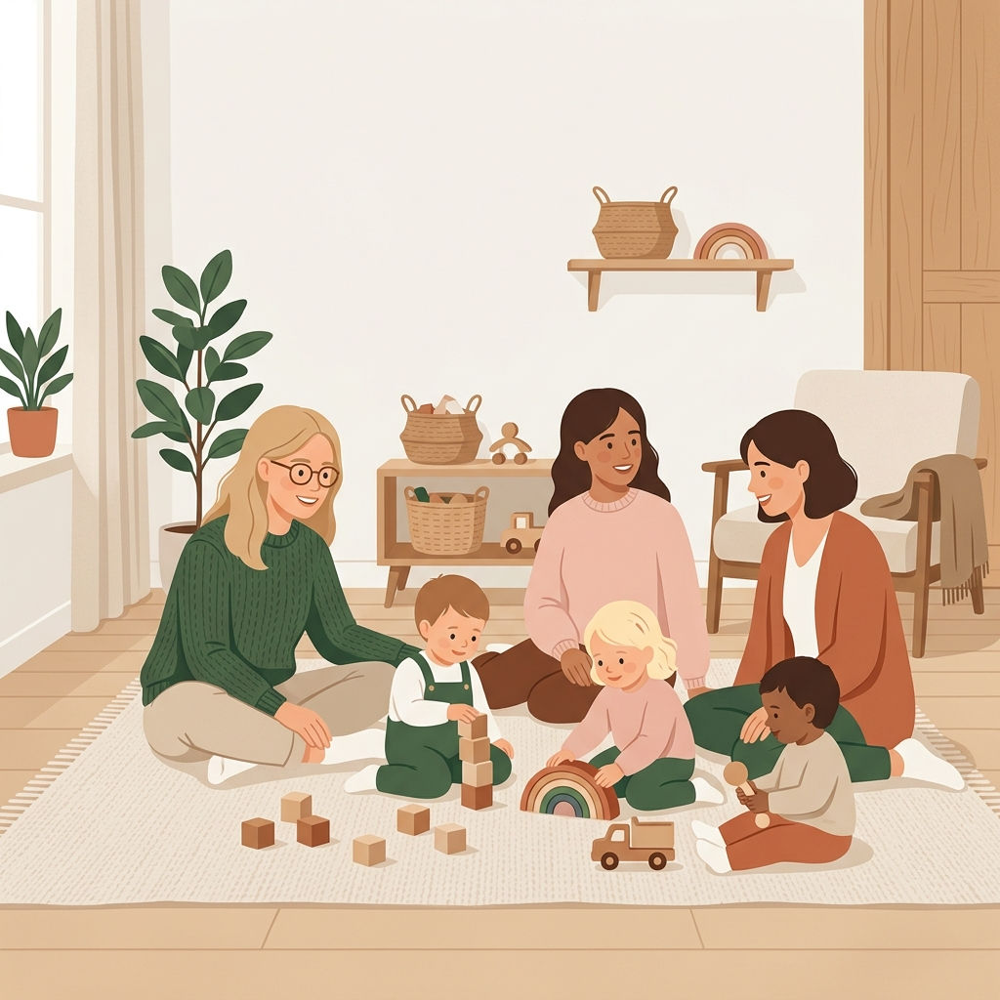
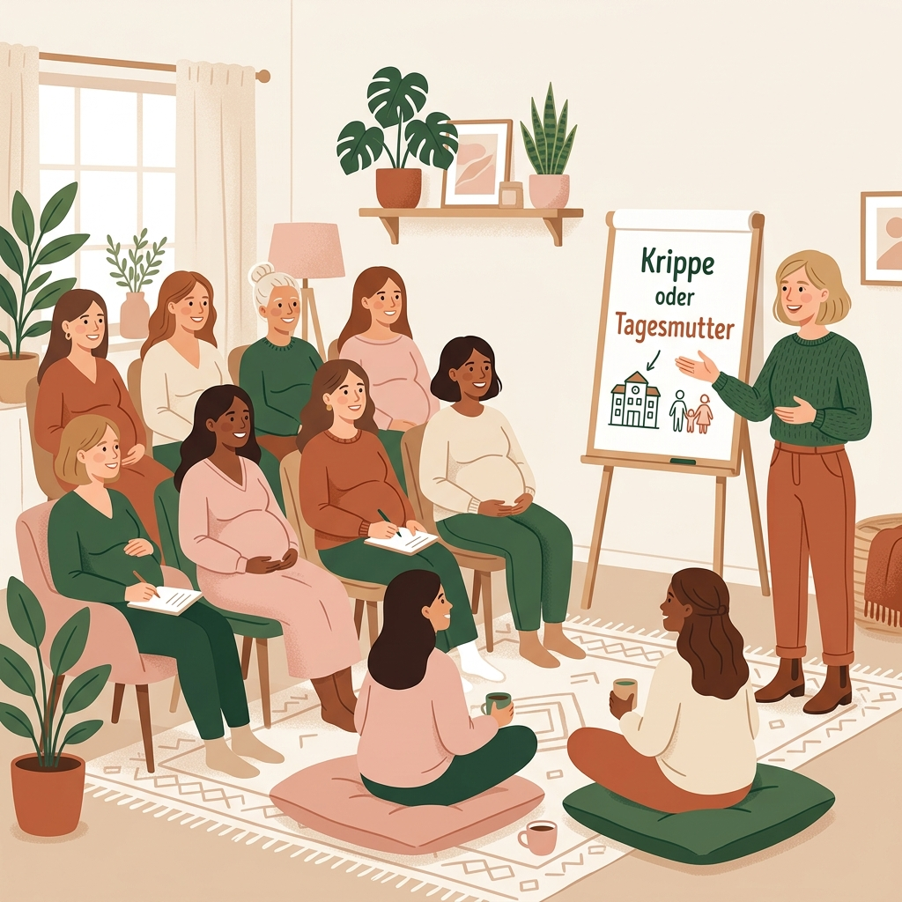

Angebote für Mamas & Familien
Treffpunkte, Auszeiten und ehrlicher Austausch in Frankfurt.
Mainhattan Mamas baut die Community für Mütter und Familien in Frankfurt, die Wege verkürzt, echten Support bietet und Freundschaften entstehen lässt – von der Schwangerschaft bis in den Kita-Alltag.
Hier findest du unsere ersten festen Formate. Such dir einfach aus, was gerade zu dir und deiner Familie passt:

Minis im Stadtteil
offenes Spiel für Kinder unter 3 Jahren
Ein Ort zum Ankommen, Spielen und Kontakte knüpfen: Bei den „Minis im Stadtteil“ sind alle Kinder unter 3 Jahren gemeinsam mit ihren vertrauten Bezugspersonen herzlich willkommen. Ob Mama, Papa, Großeltern, Tagespflegefamilie oder andere Betreuungspersonen – wir freuen uns auf euch!
Im geschützten und kindgerecht gestalteten Rahmen dürfen die Kleinsten frei entdecken, spielen und erste Kontakte zu anderen Kindern sammeln. Offenes Spiel bedeutet dabei: Kinder folgen ihren eigenen Interessen, ihrem Tempo und ihrer Neugier. Erwachsene begleiten aufmerksam, geben Sicherheit und können gleichzeitig erleben, was die Kinder gerade bewegt.
Während die Minis spielen, entsteht für die Großen Raum für Austausch, neue Begegnungen und gegenseitige Unterstützung. Ohne Leistungsdruck, ohne festes Programm – dafür mit Zeit, Offenheit und Gemeinschaft im Stadtteil.
- Für wen: Kinder unter 3 Jahren mit Bezugspersonen
- Konditionen: Ohne Anmeldung & kostenlos
- Wann: Donnerstags, 10:00 – 11:30 Uhr
- Start: Los geht’s am Donnerstag, 12. November 2026
- Termine 2026: 12.11., 19.11., 03.12., 10.12. und 17.12.
-
Ort: Evangelische Dornbuschgemeinde
Carl-Goerdeler-Strasse 1, 60320 Frankfurt
im Gemeinderaum 2
Kommt vorbei, lernt andere Familien und Betreuungspersonen kennen und gestaltet mit uns einen lebendigen Treffpunkt für die Kleinsten im Stadtteil!
Mama tankt auf
Zeit für dich. Raum zum Durchatmen.
Muttersein ist wunderbar. Aber es ist auch intensiv. Zwischen Kindern, Beruf, Haushalt, Einkäufen, Terminen, Familienorganisation und all den kleinen und großen Dingen, die täglich erledigt werden müssen, bleibt für uns selbst oft wenig übrig.
Selbstfürsorge ist in aller Munde. Wir wissen, wie wichtig es ist, auf uns zu achten, Pausen einzulegen und gut für uns zu sorgen. Aber seien wir ehrlich: Im Alltag ist das oft leichter gesagt als getan. Die Wäsche wartet, der Kühlschrank ist leer, die Kinder brauchen etwas und die nächste Aufgabe steht schon vor der Tür.
Und so stellen wir uns selbst immer wieder hinten an.
Aber wann sind eigentlich wir einmal dran?
Stell dir vor: Eine Woche hat 168 Stunden. Wenn wir davon ungefähr 8 Stunden pro Nacht schlafen, bleiben uns 112 Stunden Wachzeit. Und wenn wir uns davon gerade einmal 3 Stunden ganz bewusst für uns selbst nehmen? Das sind nicht einmal 3 Prozent unserer wachen Zeit.
Drei Stunden, in denen wir nichts erledigen müssen. Niemandem etwas organisieren. Für niemanden funktionieren. Sondern einfach einmal nur für uns selbst da sein dürfen. Genau dafür gibt es „Mama tankt auf“.
Wir möchten einen festen Anker in deinem Alltag schaffen. Einen gemütlichen Ort, an dem du ankommen, loslassen und neue Kraft schöpfen kannst. Einen Sonntag nur für dich – ohne Verpflichtungen, ohne Erwartungen und ohne das Gefühl, schon wieder einen weiteren Programmpunkt erfüllen zu müssen.
Hier darfst du einfach sein.
Vielleicht hast du Lust auf einen gemütlichen Kaffee, ein nettes Gespräch oder einen Austausch mit anderen Müttern. Vielleicht möchtest du bei einer Yoga- oder Entspannungseinheit mitmachen, neue Impulse mitnehmen oder dich mit Themen beschäftigen, die dich gerade bewegen.
Vielleicht möchtest du aber auch einfach in Ruhe dein Buch weiterlesen, die Augen schließen, ein kleines Nickerchen machen oder die Zeit ganz für dich genießen.
Alles kann, nichts muss.
Wir schaffen einen gemütlichen Rahmen mit Kaffee, Tee und kleinen Leckereien, wohltuenden Angeboten, Raum für Austausch und vor allem ganz viel Freiheit. Du entscheidest selbst, wonach dir ist und was dir gerade guttut.
„Mama tankt auf“ ist ein Angebot ausschließlich für Mütter – eine bewusste Auszeit ohne Kinder und ohne Alltagsverpflichtungen. Mal nichts müssen. Einfach sein.
Wir glauben, dass Mütter nicht immer noch mehr leisten, lernen oder organisieren müssen. Manchmal brauchen sie einfach einen Ort, an dem sie selbst im Mittelpunkt stehen dürfen. Einen Ort zum Lachen, Reden, Schweigen, Ausruhen und Kraftschöpfen. Einen Ort, an dem man sich wohlfühlen kann, ohne etwas darstellen oder erreichen zu müssen.
Denn wer immer für andere da ist, darf auch für sich selbst da sein.
Drei Stunden für dich. Weil du es wert bist.
- Für wen: Ausschließlich für Mütter – eine Auszeit ohne Kinder
- Start: Januar 2027
- Wann: Sonntags, 9:00 – 12:00 Uhr
- Teilnahme: Kostenlos
- Dafür suchen wir: Einen Kooperationspartner, der uns sonntags passende Räumlichkeiten zur Verfügung stellt.
Gestalte einen Sonntag mit!
Für „Mama tankt auf“ suchen wir Mamas jeden Alters, die dieses Format mit Leben füllen möchten. Jeden Sonntag soll es ein kleines Highlight geben – zum Beispiel Pilates, Yoga, Meditation, Massage, Achtsamkeit, Mental Coaching, Stress Relief, Atemübungen oder Heilsessions.
Schenk uns eine Stunde deiner Zeit und sei dabei!
Ich möchte einen Sonntag mitgestalten
Schwangeren-Brunch & Hebammen-Talk
Gemütlich frühstücken & alle Fragen zur Geburt im Gepäck.
Einen Hebammenplatz in Frankfurt zu finden, ist oft nicht leicht. Und bei regulären Vorsorgeterminen bleibt meist wenig Zeit für all die Gedanken und Fragen, die sich rund um Geburt und Wochenbett sammeln.
Bei unserem Hebammen-Talk machen wir es uns deshalb zur Monatsmitte in entspannter Runde gemütlich: Du frühstückst ganz entspannt in kleiner Gruppe und eine erfahrene Hebamme ist exklusiv für eure Fragen da.
- Deine Themen im Mittelpunkt: Ob Geburtsphasen, Klinikanmeldung, Vorbereitung aufs Wochenbett oder Schmerzmittel – frag alles.
- Austausch, der entlastet: Du merkst sofort: Anderen werdenden Mamas gehen genau dieselben Gedanken durch den Kopf.
- Gemeinsam kugeln: Unser monatlicher Treffpunkt, um Kontakte zu vertiefen.
- Start: Ab November/Dezember 2026
- Wo: Frankfurt am Main (Location wird noch bekannt gegeben)
- Plätze: Persönliche Runde mit maximal 10 Teilnehmerinnen
Krippe oder Tagesmutter – was passt zu uns?
Ein ehrlicher Blick hinter die Kulissen der U3-Betreuung.
Irgendwann ist sie da, diese erste große Frage: Krippe oder Tagesmutter? Und plötzlich hat jeder eine Meinung – aber was passt wirklich zu deinem Kind, eurem Alltag und eurem Bauchgefühl?
Bei unserem Betreuungs-Kompass bekommst du keine allgemeine Broschüre vorgelesen, sondern einen offenen Blick hinter die Kulissen. Eine staatlich anerkannte Erzieherin mit 20 Jahren Berufserfahrung und eigener Praxis in Krippe und Kindertagespflege teilt mit euch, worauf Eltern bei der Entscheidung und Besichtigung wirklich achten können.
Wir sprechen ehrlich darüber, wie der Alltag in den verschiedenen Betreuungsformen aussieht, welche Fragen bei einer Besichtigung wichtig sind und was euch bei Eingewöhnung, Bezugspersonen, Schlafen und Krankheiten hilft. Der Kompass gibt dir das Insiderwissen und eine konkrete Checkliste an die Hand, damit du den Weg sicher angehen kannst.
- Für wen: Eltern, die einen U3-Betreuungsplatz suchen
- Das nimmst du mit: Praktische Checkliste für Besichtigungen und konkrete Fragen
- Wann & wo: In Vorbereitung – Infos zum ersten Termin folgen

Das ist erst der Anfang.
Mainhattan Mamas wächst Schritt für Schritt gemeinsam mit euch.
Weitere Treffpunkte, Angebote rund um Schwangerschaft und Wochenbett sowie neue Formate zum Mitmachen sind bereits in Vorbereitung.
Trag dich kurz ein: Wir melden uns nur dann, wenn es zu deinen Themen konkrete Neuigkeiten gibt – kein Newsletter, kein Spam.
Bleib mit Mainhattan Mamas verbunden
Wähle aus, was dich gerade betrifft. So informieren wir dich gezielt, sobald passende Termine oder neue Angebote starten: